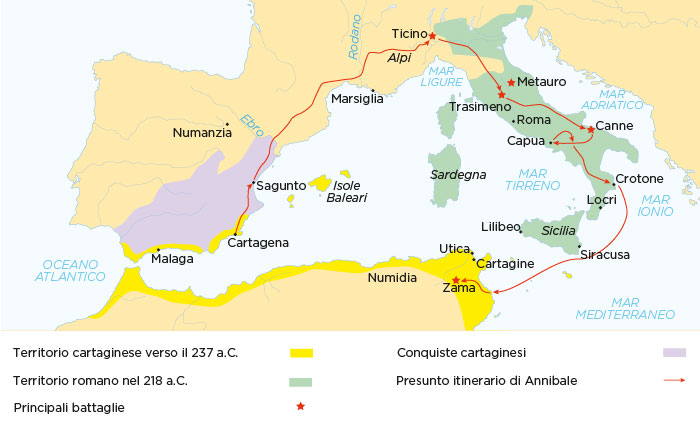

ANNIBALE & SCIPIONE
Vite Parallele e Rivalità Dottrinale
Annibale Barca (247–183 a.C.)
Dinastia dei Barcidi. Educato negli accampamenti di Spagna. Comanda mercenari d'élite ed è maestro assoluto nella guerra di movimento, sorpresa psicologica e sfruttamento del terreno.
P. Cornelio Scipione (236–183 a.C.)
Patrizio della gens Cornelia. Sopravvissuto a Canne a diciannove anni. Innova la rigida dottrina romana apprendendo le tecniche del nemico per batterlo sul proprio terreno.
Il Teatro del Mediterraneo
Dalle Alpi al Battesimo del Ticino (218 a.C.)
- La Rotta Alpina: Da Cartagena, Annibale attraversa l'Ebro, i Pirenei e le Alpi, piombando a sorpresa nella Pianura Padana ed eludendo la flotta romana.
- Salvataggio al Ticino: Il giovane Scipione (17 anni) si lancia a cavallo nella mischia per salvare il padre console, circondato dai temibili cavalieri numidi.
- Studio del Nemico: Scipione sperimenta sul campo la rapidità punica e inizia lo studio metodico e ossessivo del rivale.

Cartina non trovata automaticamente
Trascina qui il file della cartina oppure selezionalo dal computer:
La Lezione di Canne
Scipione Testimone della Disfatta (216 a.C.)
- L'Inganno Frontale: Annibale fa cedere volontariamente il centro celtico-iberico, incanalando le legioni romane nella sacca.
- Morsa sui Fianchi: I veterani africani ruotano a tenaglia chiudendo le ali romane in un imbuto mortale.
- Chiusura da Dietro: La cavalleria punica sbaraglia quella romana e carica le legioni alle spalle, sigillando il massacro.
- Il Giuramento di Canosa: Scipione sguaina la spada e costringe i giovani nobili scampati a giurare eterna fedeltà a Roma.
Legioni
Esercito Punico
Cavalleria Punica
L'Allievo del Nemico
Scipione Riforma l'Esercito Romano (210 - 204 a.C.)
- Sorpresa e Mobilità: A Nuova Cartagine sfrutta la bassa marea per scalare le mura; a Ilipa ribalta la tattica di Canne concentrando i veterani sulle ali.
- La Mossa Diplomatica: Comprende che la vera forza di Annibale era la cavalleria e stringe alleanza decisiva con il re numida Massinissa.
- Ribaltamento del Teatro: Sbarca direttamente in Africa minacciando Cartagine, costringendo il senato punico a richiamare Annibale dall'Italia.
Zama e l'Epilogo
La Risoluzione Tattica e l'Incontro di Efeso (202 a.C.)
- Il Colloquio di Zama: Prima dello scontro i due condottieri si incontrano da soli in una tenda; Scipione rifiuta la pace offerta da Annibale.
- I Corridoi di Scipione: I manipoli allineati in colonne longitudinali lasciano sfilare gli 80 elefanti; la cavalleria numida chiude Annibale alle spalle.
- L'Incontro di Efeso: Anni dopo discuteranno dei più grandi generali della storia; entrambi moriranno nel 183 a.C. in esilio e dimenticati dalla patria.
Corridoi Romani
Elefanti da Guerra
Esercito Cartaginese